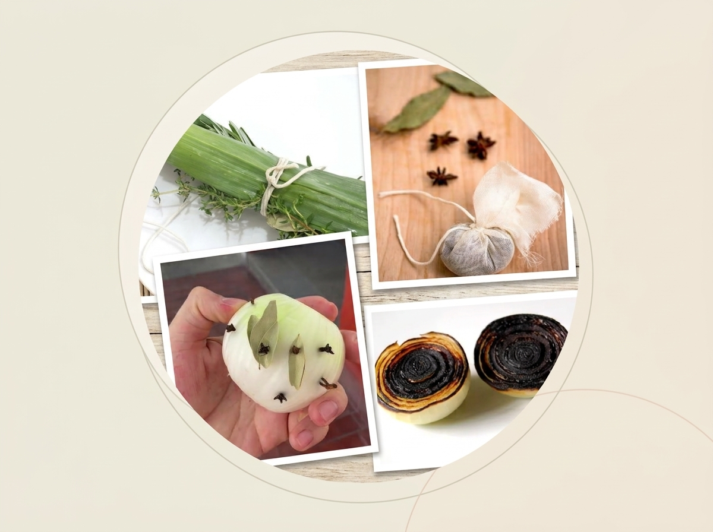
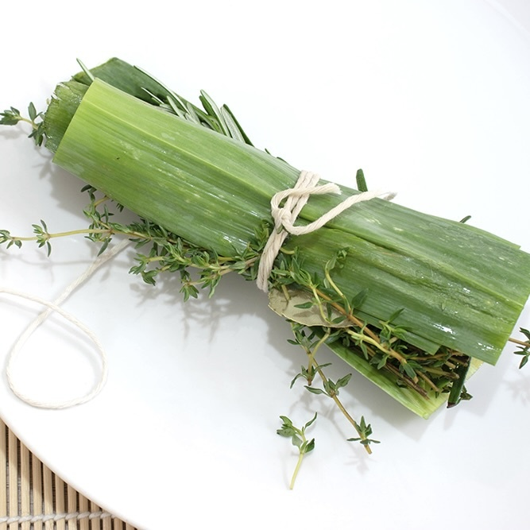
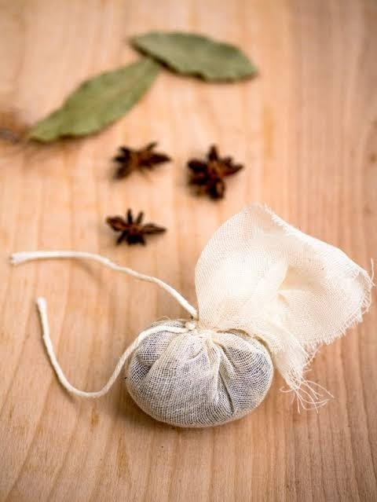
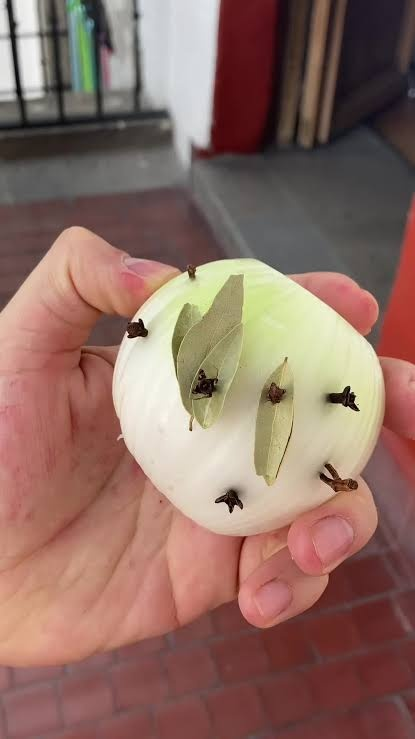
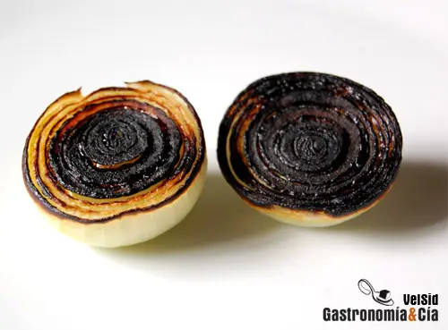

Aromatizantes
Hierbas, especias y vegetales que se utilizan para aportar aroma y sabor a diferentes preparaciones, como fondos, caldos, sopas y guisos.
Bouquet garni · Sachet d’épices · Oignon piqué
¿Qué son los aromatizantes?
Los aromatizantes son combinaciones de hierbas, especias y vegetales que se agregan durante la preparación de los alimentos para mejorar su aroma y sabor.
Se utilizan principalmente en fondos, caldos, sopas y guisos. Algunos se colocan dentro de una envoltura o se amarran para poder retirarlos fácilmente después de la cocción.
Nuestros aromatizantes
Tres preparaciones utilizadas en la cocina.
Bouquet garni
Atado de hierbas aromáticas.

¿Qué es?
El bouquet garni es un conjunto de hierbas y vegetales aromáticos que se agrupan y se atan con bramante o se envuelven en una hoja de vegetal. Se utiliza para aromatizar fondos, caldos, sopas y guisos durante su cocción.
Generalmente se retira antes de servir, ya que su función es aportar aroma y sabor a la preparación.
Lo que vamos a necesitar
| Ingrediente | Unidad | Cantidad |
|---|---|---|
| Tomillo fresco | kg | 0.0003 |
| Laurel fresco | kg | 0.0002 |
| Perejil liso | kg | 0.0003 |
| Apio | kg | 0.040 |
| Poro | kg | 0.020 |
| Bramante | m | 0.020 |
Preparación previa
- Lavar y cortar el poro a la mitad.
- Separar las capas del poro.
- Lavar y preparar las hierbas y el apio.
- Preparar el bramante para amarrar.
Elaboración
Preparar el poro
Lavar y cortar el poro a la mitad, separando sus capas.
Colocar los ingredientes
Poner el tomillo, laurel, perejil y apio dentro de una de las capas de poro.
Envolver y amarrar
Cubrir con la otra capa de poro y amarrar firmemente con el bramante.
Dato gastronómico
En algunos países también se utilizan cebolla, col blanca o zanahoria para envolver o sujetar los ingredientes del bouquet garni.
Sachet d’épices
Saco de especias.

¿Qué es?
El sachet d’épices es una pequeña bolsa elaborada con manta de cielo que contiene hierbas y especias aromáticas. Se utiliza para transmitir sus aromas a fondos, caldos, sopas y guisos durante la cocción.
La tela permite que los sabores pasen al líquido, mientras mantiene las especias reunidas para retirarlas fácilmente al finalizar.
Lo que vamos a necesitar
| Ingrediente | Unidad | Cantidad |
|---|---|---|
| Tomillo fresco | kg | 0.0003 |
| Laurel fresco | kg | 0.0002 |
| Perejil liso | kg | 0.0003 |
| Clavo | kg | 0.0001 |
| Pimienta negra entera | kg | 0.0002 |
| Manta de cielo | m | 0.020 |
| Bramante | m | 0.020 |
Preparación previa
- Lavar y desinfectar los vegetales.
- Cortar la manta de cielo.
- Cortar el hilo de bramante.
- Separar y medir los ingredientes.
Elaboración
Extender la tela
Colocar la manta de cielo sobre una superficie limpia.
Agregar los ingredientes
Colocar el tomillo, laurel, perejil, clavo y pimienta negra entera en el centro de la manta.
Formar el saco
Juntar las esquinas de la manta de cielo para formar una pequeña bolsa.
Amarrar
Cerrar y sujetar firmemente el saco utilizando el bramante.
Dato gastronómico
El sachet d’épices es práctico porque permite retirar todas las especias de una preparación sin tener que buscarlas una por una.
Oignon piqué
Cebolla claveteada.

¿Qué es?
El oignon piqué es una cebolla aromatizada con especias, principalmente laurel y clavo. Se utiliza para perfumar preparaciones como la leche para salsa bechamel, fondos y otras preparaciones de cocina.
Su nombre hace referencia a la técnica de introducir o sujetar las especias en la cebolla para que liberen su aroma durante la cocción.
Lo que vamos a necesitar
| Ingrediente | Unidad | Cantidad |
|---|---|---|
| Cebolla | kg | 0.050 |
| Laurel fresco | kg | 0.0002 |
| Clavo | kg | 0.0001 |
| Pimienta | kg | 0.0001 |
Preparación previa
- Limpiar la cebolla.
- Cortar la cebolla por mitad o en cuartos, dependiendo del volumen de preparación.
- Separar las especias necesarias.
Elaboración
Preparar la cebolla
Limpiar y cortar la cebolla por mitad o en cuartos, dependiendo del volumen de la preparación.
Introducir el laurel
Realizar un pequeño corte con el cuchillo para introducir y sujetar la hoja de laurel.
Clavetear
Introducir los clavos y la pimienta en la cebolla, de acuerdo con la preparación indicada en el recetario.
Dato gastronómico
El oignon piqué es muy utilizado para aromatizar la leche de la salsa bechamel. Después de infusionar, la cebolla se retira antes de continuar con la preparación.
Oignon brûlé
Cebolla quemada.

¿Qué es?
El oignon brûlé es una preparación que consiste en quemar o caramelizar intensamente la superficie de una cebolla cortada en rodajas gruesas o mitades. Se utiliza principalmente para aportar color y notas tostadas a fondos y caldos.
Lo que vamos a necesitar
| Ingrediente | Unidad | Cantidad |
|---|---|---|
| Cebolla | kg | 0.050 |
Preparación previa
- Limpiar la cebolla.
- Cortarla en rodajas gruesas de aproximadamente 1 pulgada.
Elaboración
Calentar la superficie
Colocar una sartén o plancha a fuego alto para realizar la preparación.
Quemar la cebolla
Colocar las rodajas de cebolla sobre la superficie caliente hasta que su exterior quede quemado.
Otras formas de preparación
También se puede realizar utilizando un grill o directamente sobre el fuego.
Dato gastronómico
El oignon brûlé se utiliza para aportar color oscuro y un sabor tostado a diferentes fondos, especialmente fondos oscuros.
Diferencias entre los aromatizantes
| Aromatizante | Forma de preparación |
|---|---|
| Bouquet garni | Hierbas y vegetales envueltos y amarrados. |
| Sachet d’épices | Hierbas y especias dentro de una bolsa de tela. |
| Oignon piqué | Cebolla con laurel y especias claveteadas. |
| Oignon brûlé | Cebolla quemada para aportar color y sabor tostado. |